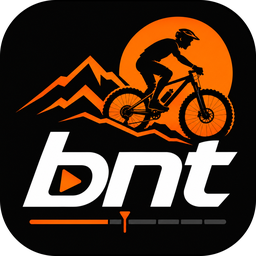

BNT Editor
Versão 2.0 · Windows e Linux
Editor de vídeos de ciclismo para Windows e Linux: do material bruto da câmera ao vídeo pronto no YouTube.
Do bruto ao YouTube, num só programa
O BNT Editor foi feito para quem grava pedais com GoPro e celular. Ele cuida de todo o caminho, sem passar por outro editor.
Corta
Monte os cortes de cada parte do vídeo direto nos arquivos brutos: teaser, principal e encerramento.
Acrescenta
Textos, nomes de lugares, painel de GPS, música, câmera lenta, zoom, transições e ajuste de brilho.
Renderiza
Gera o vídeo final em 4K, com a placa de vídeo, e o som no volume certo para o YouTube.
Entrega
Capa, legendas automáticas, capítulos, dados do vídeo e envio ao YouTube, tudo na mesma tela.
Novidades da versão 2.0
A versão 2.0 é o BNT Editor reescrito para rodar também no Linux, com o mesmo caminho do bruto ao YouTube e um visual escuro, no estilo dos editores de vídeo. O app antigo continua funcionando ao lado dele, com os dados separados.
Windows e Linux
- O mesmo app nos dois sistemas: no Linux ele vem como AppImage ou pacote tar.gz.
- Visual escuro, com fontes e espaçamentos menores para caber mais na tela.
- Se falta algum componente (o player VLC ou o ffmpeg), o app diz o que instalar.
- Painel de aceleração (ffmpeg, placa de vídeo e player) e um relatório de problema que leva essas informações.
Novos efeitos
- Desfocar uma região (placa de carro, rosto): um retângulo que anda em linha reta do começo ao fim, em três forças, vários ao mesmo tempo.
- Parar o quadro: a imagem freia em 1 s, fica parada o tempo que você escolher e retoma em 1 s. O som fica mudo, com música de fundo opcional, e o painel de GPS para junto com a imagem.
- Zona dos batimentos (Z1 a Z5) escrita no título do medidor de FC, com os limites de cada zona editáveis.
No dia a dia
- Proxies de 720p para o player tocar leve os brutos 4K, com o espaço que ocupam na tela de Espaço em disco.
- Salvamento automático, medidor de nível do som e primeiro uso guiado.
- Antes do render, o app avisa se o ffmpeg não tem algo de que o vídeo precisa.
- O botão do Curtir e Inscrever com altura ajustável.
Funcionalidades
Cortes
- Player direto nos arquivos brutos, com a taxa de quadros de cada um (GoPro e celular).
- Forma de onda do som e trechos de fala marcados na barra de tempo.
- Marcar início e fim, dividir, duplicar, reordenar arrastando e ajustar quadro a quadro.
- Conferir a emenda entre cortes e tocar a sequência inteira.
- Copiar ou mover um corte (ou vários) entre o teaser, o principal e o encerramento, com os efeitos dele.
- Importar os brutos da pasta, da GoPro ou do celular por cabo USB, com filtro por data e a escolha de fotos e/ou vídeos: o app copia com andamento, confere o tamanho e nunca sobrescreve um original. Ao conectar o aparelho, a importação abre sozinha.
- Gravações da GoPro em vários arquivos (capítulos) tratadas como um só bruto.
- O corte selecionado se atualiza sozinho quando você mexe nas marcas de início e fim.
- As marcas (textos, localizações, GPS, música) acompanham os cortes quando você move ou apaga trechos.
Textos e painel
- Informações na tela, com sugestões prontas pelo GPX: ponto mais alto, velocidade máxima e subida mais forte.
- Localização com o nome do lugar preenchido pelo GPS, e detecção dos lugares ao longo do trajeto.
- Painel de GPS com velocímetro, inclinação, altitude, força G e minimapa, a partir do GPX e da telemetria da GoPro. Com um GPX de sensores (como o do Strava), mostra também cadência, batimentos, temperatura e calorias, além de distância, subida acumulada, rumo (bússola) e vento (direção e velocidade em relação ao sentido da bike).
- Potência ao vivo: a do medidor, quando a atividade tem, ou calculada (marcada como estimada) com o peso do ciclista e da bike, o vento do dia, o tipo de piso (asfalto, terra, cascalho, lido de um mapa aberto) e o tipo de pneu, em quatro categorias.
- Ordem dos medidores automática, por assunto (esforço, ambiente e percurso), ou manual, numa lista com setas; faixa única opcional, com todos os medidores num fundo só; tamanho do painel de 80 a 130% e escolha dos mostradores por projeto.
- Zona dos batimentos (Z1 a Z5) no título do FC, com os limites editáveis.
- Gráfico de altitude do passeio num card no canto superior esquerdo, com o trecho já pedalado em destaque e a posição atual.
- Logo do canal em uma de nove posições (e também no player da Edição), e Informações, Locais e Curtir que desviam dos medidores para não cobri-los.
- Pontos de interesse: cadastre um lugar que não é bairro (uma igreja, uma queijaria) e o app cria a localização no momento em que o percurso passa por ele.
- Botão de Curtir e Inscrever, manual ou automático a cada N minutos.
- Música de fundo que abaixa sozinha quando há fala, escolhida numa biblioteca de áudio com a duração de cada faixa e um play para ouvir antes; os créditos das músicas entram sozinhos na descrição.
- Resumo do passeio: tela final com mapa, traçado, perfil de altitude e números do percurso, com seis estilos de mapa à escolha: relevo, ruas, ciclismo, satélite, escuro e claro.
- Botões em grupos nos dois lados do player; cada item e cada efeito abre numa janela própria, e a lista do que já foi aplicado fica à direita, com lápis e lixeira.
- Onda do som e marcas de fala no fundo da timeline da Edição, com um botão para ligar e desligar, e medidores de nível do áudio no player.
Efeitos
- Câmera lenta, acelerado e hyperlapse, com rampa suave de entrada e saída.
- Desfoque de movimento para dar sensação de velocidade.
- Desfocar uma região (placas, rostos) com um retângulo que anda do começo ao fim.
- Parar o quadro com freada e retomada de 1 s, som mudo e música opcional.
- Zoom de até 3x, com retângulos de começo e fim desenhados no player.
- Transições em cada emenda: escurecer, corte seco, fusão, cortina, círculo ou persiana.
- Ajuste de brilho por clipe, para gravações que escurecem no fim do dia ou clareiam no amanhecer, com nitidez, vinheta e LUT de cor (.cube), e o botão Igualar ao anterior, que leva o brilho do clipe ao do clipe de antes.
- No som de cada clipe: redução de vento, voz uniforme e ganho de volume em dB.
Renderização
- Saída em 4K, 1080p ou 720p, a 60 ou 30 quadros, em 10 bits.
- Usa a placa de vídeo para ser rápido; sem ela, usa o processador.
- Cada clipe vira uma peça: ao mudar um detalhe, só refaz o que mudou.
- Som normalizado para o YouTube (−14 LUFS).
- Estimativa de tempo e de espaço em disco, e retomada se o render for interrompido.
- Uma faixa na timeline mostra quais peças já estão prontas e quais serão refeitas.
- Pode deixar tudo rodando sozinho: render, legendas, envio e desligar o computador.
Legendas
- Legendas automáticas geradas no seu computador, sem enviar o áudio a ninguém.
- Correção da grafia dos nomes de lugares do vídeo e do trajeto.
- Janela de revisão: ouvir cada trecho, ajustar tempo e texto, juntar, apagar e trocar uma palavra em todas.
- Grava um arquivo .srt pronto para o YouTube.
Capa e YouTube
- Editor de capa com textos arrastáveis, modelos salvos e o logo do canal.
- Capítulos gerados a partir das marcas do vídeo.
- Título, descrição, tags, playlist, visibilidade e agendamento preenchidos no app.
- Envio direto ao YouTube: vídeo, capa, legendas e playlist, com a visibilidade escolhida.
- Conferência antes do envio, para não esquecer nada.
Integrações
- YouTube: conecte a conta do seu canal uma vez e envie o vídeo, a capa, as legendas e a playlist direto do app.
- Strava: escolha a atividade do passeio na lista da sua conta e o percurso é baixado sozinho quando você cria o projeto, como GPX com o horário de cada ponto (e batimentos, cadência e temperatura, quando a atividade tem), para o painel de GPS e o resumo do passeio.
- O nome da atividade vira o nome do GPX e do projeto, e o link dela entra no campo do Strava.
- As duas contas se conectam na mesma aba, em Configurações → Integrações, e o acesso fica só no seu computador.
Conferência
- Analisar: avisos e erros antes de renderizar.
- Revisão rápida: um quadro de cada item numa galeria.
- Prévia de um clipe, com textos e painel, antes do render completo.
- Desfazer e refazer com histórico das edições, e a volta a uma versão anterior do projeto.
- Paleta de comandos (Ctrl+K): ache qualquer ação, clipe ou efeito aplicado digitando.
- Se algo der errado na tela, o app guarda uma cópia do projeto, avisa e segue aberto.
- Tudo que demora (análise, leitura de telemetria, mapa, render, legendas, envio) aparece na barra de status do alto, com o andamento.
- Novo projeto a partir de outro: herda o que se repete a cada passeio, sem os cortes.